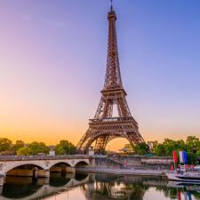

Lugares Turísticos Disponibles

París, Francia
La ciudad del amor, famosa por la Torre Eiffel, el Louvre, el Sena y su encanto único en cada rincón.
Maldivas
Playas paradisíacas, aguas cristalinas y resorts sobre el mar. Un destino ideal para el relax y el lujo.
Roma, Italia
Una ciudad llena de historia y arte, con monumentos como el Coliseo, la Fontana di Trevi y el Vaticano.

Kyoto, Japón
Templos tradicionales, jardines zen y cultura ancestral en una de las ciudades más emblemáticas de Japón.